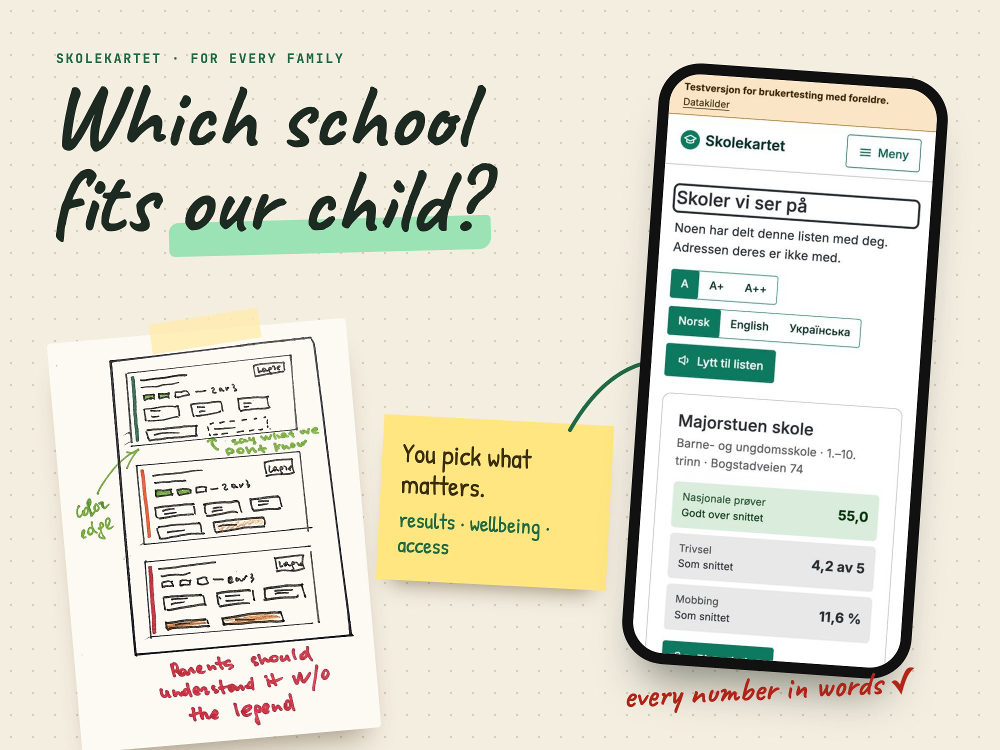
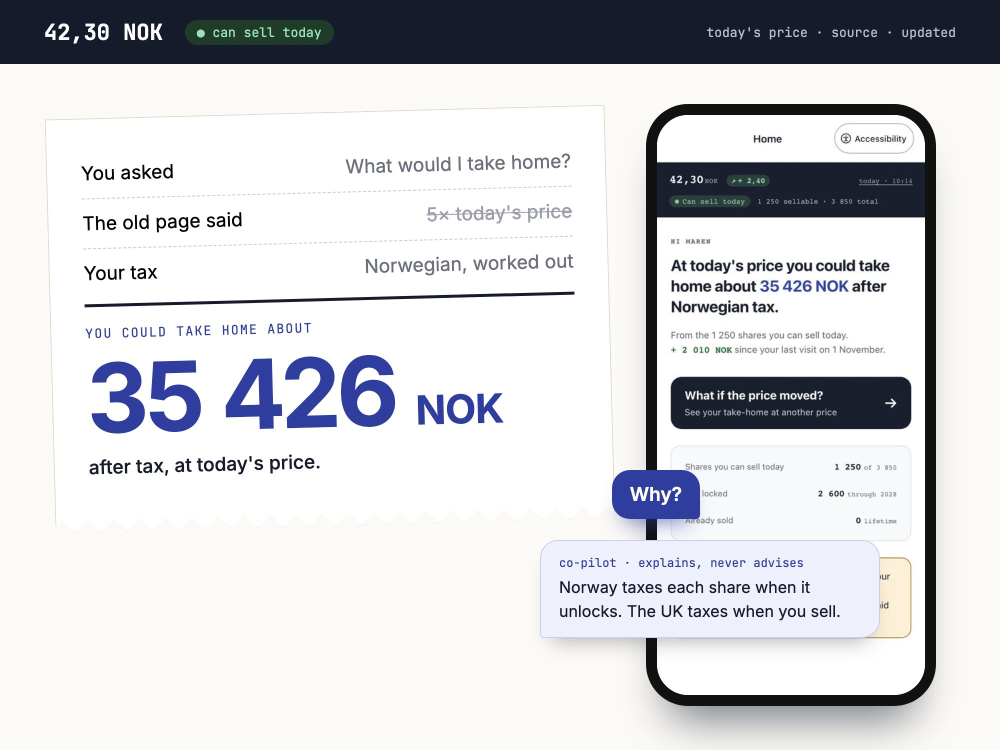
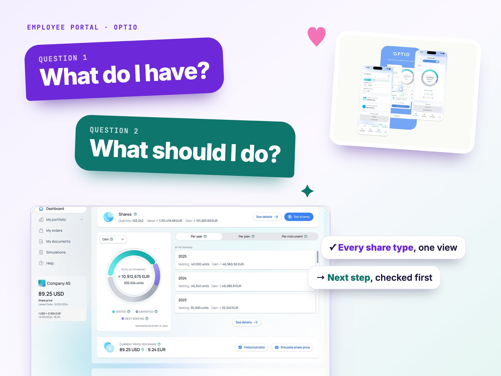

Empathy
- Building relationshipseasy to collaborate with
- Detail-orientedthorough from first draft to final check
- Hard-workingsteady effort, even when things get difficult
Aesthetic sensitivityComposure under pressureLogical reasoningCuriosity
Product designer in Oslo · fintech and compliance · background in information security
Hi, I'm Anastasiia — a product designer based in Oslo with 5+ years of design behind me, most recently as Product Designer at Optio Incentives (2022 — 2025).
My information-security degree quietly shapes the work: I think in roles, permissions and rule-based interfaces — exactly the territory of equity, transactions and financial reporting.
What drives me: helping people improve and grow, the users I design for and the team I design with.
What I’m working on at the moment.
In progress · helping a friend
My friend built a map of Norway’s schools, ranked by test scores. Then a parent with MS needed a school for their kids, and the map couldn’t help them. I redesigned it so every family says what matters to them and gets every number in plain words, plus a shortlist the parent can open on their own phone.

2026 · Working products, not claims. One helps a design team use AI well every day. The other puts an AI co-pilot in front of customers, and knows where to stop.

Everyone on the team wrote prompts their own way, so the answers were hit and miss. I gave every prompt the same simple shape and built a library that lives right where I write.
One shape Role, Task, Context, Constraints, Format. Anyone can pick a prompt up and reuse it.

I rebuilt the share simulator I worked on at Optio around the question people actually ask: what would I take home? Phone first, with an AI co-pilot that explains the number and never tells anyone to sell or hold.
1 sentence What you’d take home, after your tax. The answer comes before any chart.
Five knowledge bases ground the AI in the real product before any prompt runs.
RTCCF wraps every step. Each output has its own framework: PRISM for research synthesis, BGOALC for interview scripting, PRIME for ideation, TASKS for implementation.
Live HTML guides. A stakeholder-ready research report. HMW cards. A React prototype that runs.
2022–2025 · Product designer at Optio Incentives, a platform for employee equity. I was Optio’s first in-house product designer.

Customer Success hand-built the monthly Excel exports for every client. I led the redesign that replaced them with guided self-serve flows, and shaped the rules engine that scales them across jurisdictions.
~1 000 h / yr Manual Customer Success work removed. Reporting prep went from days to hours.

Most people open an equity portal twice a year and forget how it works. I redesigned the dashboard around the two questions participants actually ask: what do I have, and what should I do?
Sept ’24 Optio’s highest positive-feedback month on record. The biggest client stayed.
I’m drawn to the slower problems behind clean interfaces — the rules, the edge cases, the bit of policy nobody wants to read. Good UX, to me, is honest about complexity instead of hiding it, and open to the people who need to use it. It respects their time and helps the business make grounded decisions.
That instinct started with accessibility-first work for a school for children with special needs in Kyiv.
— Anastasiia ♥
When I close the laptop, I repot something. Bant supervises, from the nearest box.


Oslo, hybrid, or remote within the EU. Ideally fintech, compliance-heavy SaaS, or anywhere a rule-based interface needs to feel kind.